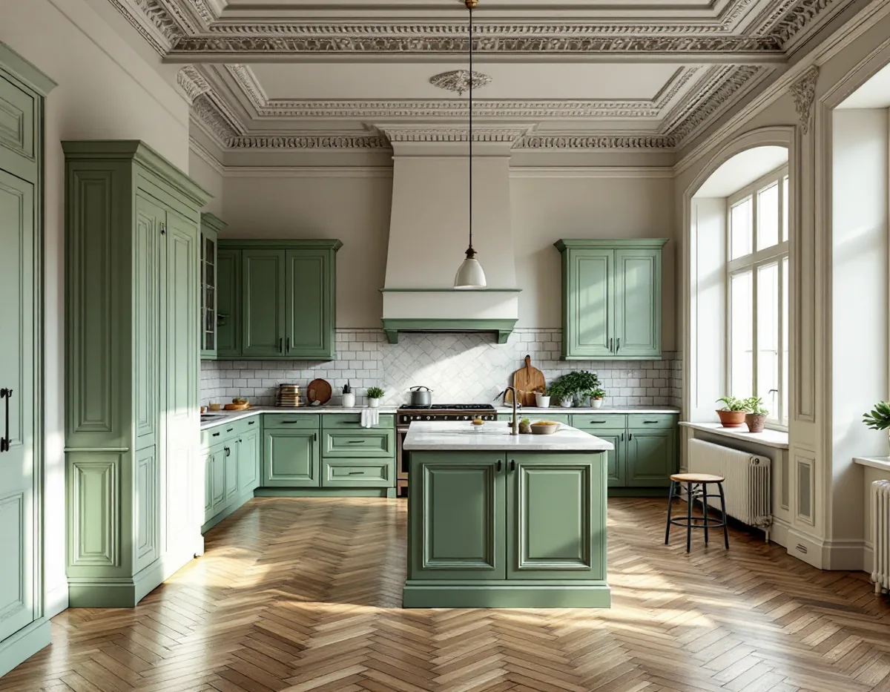
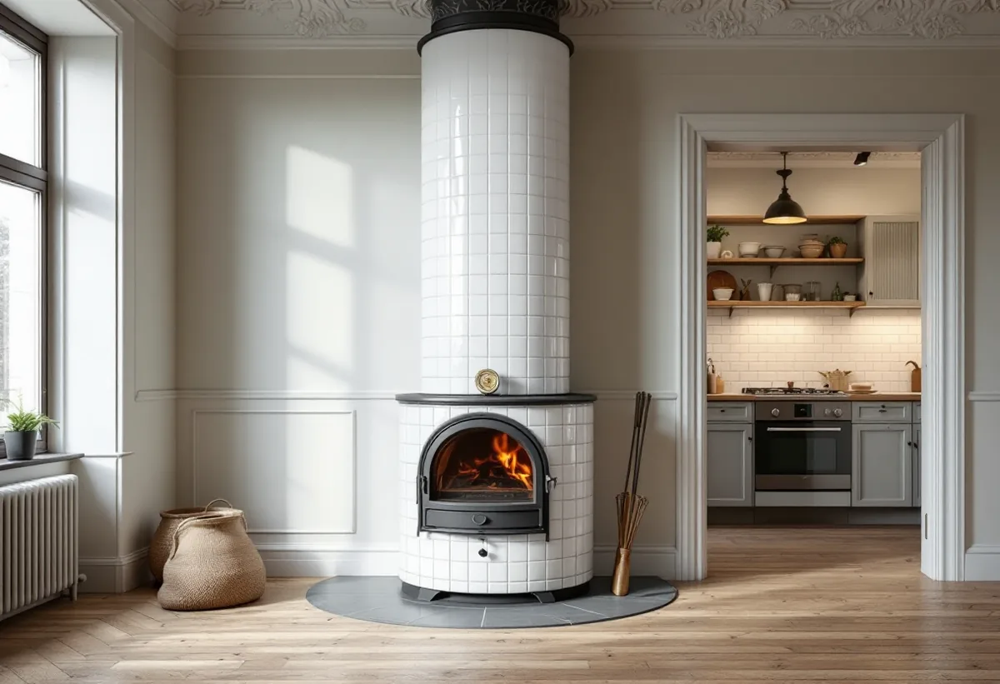
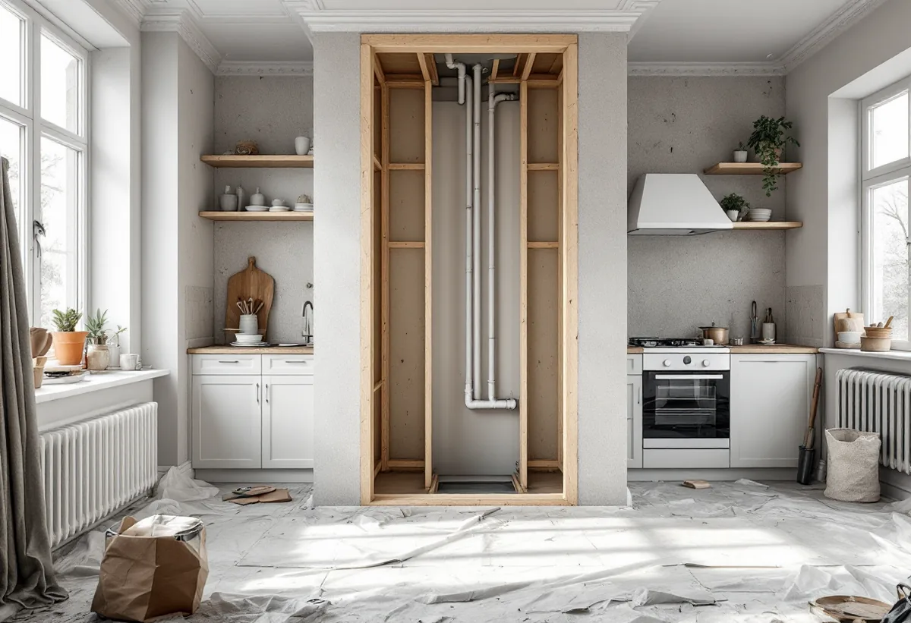

Platsbesök
Gratis besök där vi tittar på stammar, kanaler och originaldetaljer.
På Östermalm finns många stora lägenheter där köket ligger långt från matsalen eller där en ägare vill flytta det. Det väcker frågor om stammar, kanaler och lägenhetens kulturvärden. Geal Entreprenad AB utreder förutsättningarna och bygger köket med en kontakt för hela projektet.

Stadens områdesfakta för 2025 visar att statistikområdet Hedvig Eleonora har 7 290 lägenheter i flerbostadshus. 1 119 av dem har fem rum eller fler, och 939 saknar fullt kök. 5 151 av bostäderna är bostadsrätter. Det är alltså både stora våningar och små lägenheter i samma kvarter.
I de stora lägenheterna vill många flytta köket till ett ljusare rum eller öppna det mot en matsal. Staden skriver att det inte behövs bygglov för att flytta ett kök. Men om flytten kräver en ny VA-stam i ett nytt schakt, om ventilationen ändras väsentligt eller om bärande konstruktion eller brandskydd påverkas, krävs anmälan och startbesked.

Bostadsrättslagen har en särskild regel som är viktig i äldre hus: för en lägenhet med särskilda historiska, kulturhistoriska, miljömässiga eller konstnärliga värden krävs styrelsens tillstånd för varje åtgärd som påverkar ett sådant värde. Det kan gälla allt från en äldre köksinredning till stuckatur, dörrar och kakelugnar i rummet dit köket ska flyttas.
Staden påminner också om att du ska ta hänsyn till byggnadens kulturhistoriska värden vid alla ändringar. Stadsmuseets klassificeringskarta visar hur huset är klassat. Vi går igenom vad som finns kvar av ursprunglig inredning innan vi föreslår var köket ska ligga, och vi föreslår hellre en lösning som låter detaljerna vara kvar. Finns ett äldre skafferi eller originalluckor kan de ofta renoveras och byggas in i det nya köket i stället för att rivas.
Ett kök som flyttas långt från stammarna behöver ofta antingen långa ledningar med fall i golvet eller en ny stam i ett nytt schakt. Det senare kräver anmälan till staden och styrelsens tillstånd, eftersom ledningar för vatten och avlopp ändras. Bostadsrättslagen kräver tillstånd även för ändring av ledningar för värme och gas och för ändrad ventilation.
Köksfläkten är den andra stora frågan. Staden skriver att köket ska ha tillräcklig frånluft och uppfylla kraven för imkanal, och att sotaren bör tillfrågas tidigt om en ny eller ändrad kanal. I hus med kakelugnar och gamla rökkanaler är det extra viktigt att veta vilka kanaler som används till vad.
Styrelsen får bara vägra tillstånd om åtgärden är till påtaglig skada eller olägenhet för föreningen, men den kan förena tillståndet med villkor. I större föreningar finns ofta regler för arbetstider, skydd i trapphus och hiss och hur byggavfall ska tas om hand. Vi följer dem och tar fram den dokumentation styrelsen vill ha efter arbetet. I en stor lägenhet kan det också vara klokt att göra köket i etapper, så att en del av bostaden går att använda medan arbetet pågår, och att planera hur material ska bäras in utan att skada trapphusets äldre ytor.
El och VVS utförs av behöriga installatörer. Är det badrummet som också ska göras om beskriver vi det under badrumsrenovering på Östermalm, och mer om kök i allmänhet finns under köksrenovering.

Gratis besök där vi tittar på stammar, kanaler och originaldetaljer.
Klassning, ventilation och ledningsdragning utreds innan köket placeras.
Underlag till styrelsen för tillstånd, med ritningar.
Anmälan till staden vid ny stam, ändrad ventilation eller bärande delar.
El och VVS via behöriga installatörer, snickerier och montering.
Genomgång och dokumentation till dig och föreningen.
Skatteverket godkänner rotavdrag i en bostadsrätt för arbete inne i lägenheten som du själv ansvarar för enligt föreningens stadgar – till exempel att montera fast köksinredning och installera vitvaror i samband med en omfattande renovering, byta köksluckor eller riva innerväggar. Avdraget gäller arbetskostnaden, och Geal drar det direkt på fakturan.
Om köket flyttas eller stannar, ny stam och schakt, ventilation, hänsyn till originaldetaljer, inredning och vitvaror samt föreningens regler för arbetet. Efter ett gratis platsbesök får du ett skriftligt kostnadsförslag.
Planering, el, VVS, fläkt och väggar.
Köksrenovering i Stockholm →Kulturvärden, förvanskningsförbud och klassning.
Badrumsrenovering på Östermalm →Slå ihop två lägenheter.
Byggföretag på Östermalm →Gatufasad, gårdsfasad och lovfrågan.
Fasadrenovering på Östermalm →Stenstaden, Lärkstaden och villorna.
Fönsterbyte på Östermalm →Fönster och glas i Gärdets 1930-talshus.
Fönsterrenovering på Östermalm →Mönsterparkett, lack och olja.
Golvläggare på Östermalm →Slipa om eller underhålla lackade golv.
Golvslipning på Östermalm →Limfärg i taken, dekor och lov.
Målare på Östermalm →Taklandskapet och balkongerna.
Plåtslagare på Östermalm →Klassade våningar och bostadsrätt.
Tapetsering på Östermalm →